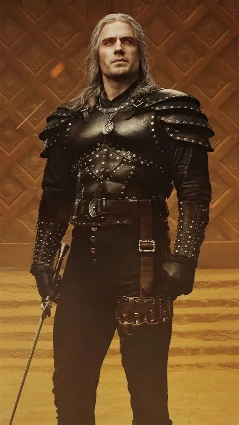
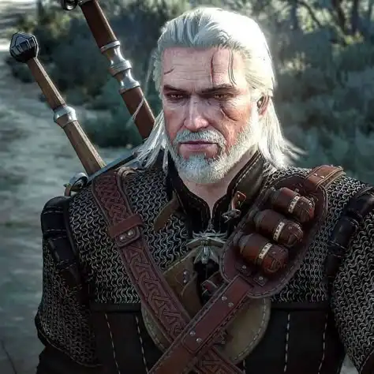

Geralt de Rivia
El Lobo Blanco · El Carnicero de Blaviken
En la serie

Interpretado por: Henry Cavill (T1-T3) / Liam Hemsworth (T4+)
En el videojuego

Diseño y voz: CD Projekt Red · Doug Cockle
Brujo de la Escuela del Lobo y cazador profesional de monstruos. Su vínculo con Ciri y Yennefer termina convirtiendo una vida aparentemente neutral en una lucha por su familia elegida.
Diferencias clave
- Serie: su interpretación enfatiza el silencio, la economía verbal y la relación paternal con Ciri.
- Serie: Henry Cavill construye una versión físicamente muy marcada por la espada y el combate.
- Juego: el jugador determina gran parte de su personalidad mediante decisiones y diálogos.
- Juego: Doug Cockle proporciona una voz más grave y áspera que forma parte de la identidad del Geralt jugable.